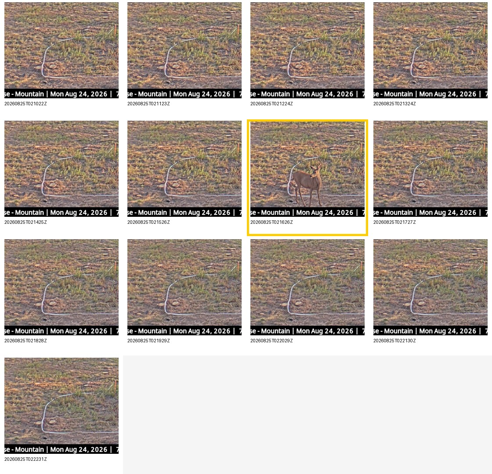
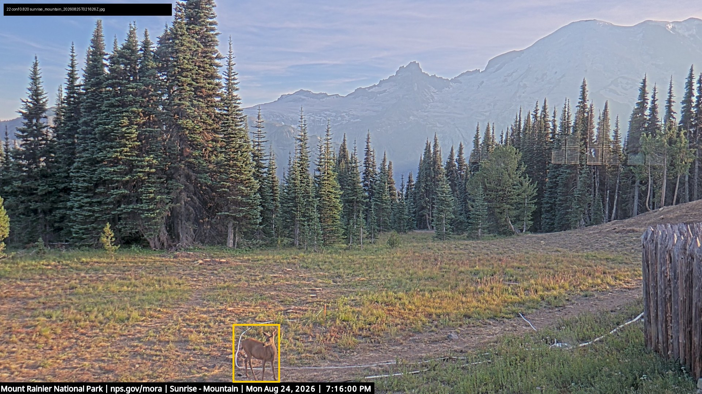
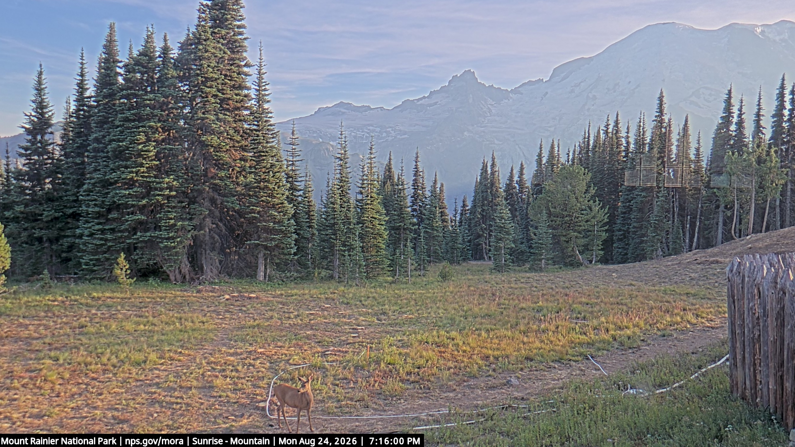

{kind=link}
{kind=link}

Neighboring Frames
The reviewed sequence spans 2026-08-25T02:10:22Z through 2026-08-25T02:22:31Z. The animal is clearly visible in the 02:16:26Z frame; nearby frames are mostly empty.
Reviewed MegaDetector results for the NPS Sunrise Mountain fixed camera across August 2026. This page leads with the strongest human-reviewed wildlife evidence found in the August pass: a clear deer on 2026-08-25. It also documents why the raw high-confidence list is not the same thing as a wildlife list.

Timestamp: 2026-08-25T02:16:26Z
Model: MegaDetector V6 MIT, animal confidence 0.820
Source frame: sunrise_mountain_20260825T021626Z.jpg
The model surfaced the frame; the deer label is based on visual review of the full-frame context.

The reviewed sequence spans 2026-08-25T02:10:22Z through 2026-08-25T02:22:31Z. The animal is clearly visible in the 02:16:26Z frame; nearby frames are mostly empty.

Unannotated source frame retained beside the boxed review image so the detection can be judged in context.
The August backfill changed the Sunrise picture. The previous 2026-08-28 to 2026-09-01 page was dominated by weak foggy meadow-edge candidates. The full-month scan found better evidence, especially the 2026-08-25 deer.
Many top-confidence animal boxes in the full-month run were people, maintenance activity, or hikers near the camera. Those images are not included in this wildlife gallery. They are counted as part of the model review workload and should inform the next round of filtering.
Bear status: a bear is not featured here. The first visual triage pass confirmed the deer and rejected several high-confidence people/maintenance false positives. The remaining candidates still need deeper human review before making any bear claim.
| Period | Observed lake coverage | Notes |
|---|---|---|
| 2026-08-01 to 2026-08-05 | 0 frames | No Sunrise Mountain frames present in the lake. |
| 2026-08-06 to 2026-08-29 | 29,581 frames | Data-bearing days analyzed with MegaDetector; several days are partial captures. |
| 2026-08-30 to 2026-08-31 | 0 frames | No Sunrise Mountain frames present in the lake. |
| Metric | Value |
|---|---|
| Raw MegaDetector detections | 9,956 |
| Filtered review candidates | 347 |
| Dark or unusable frames | 11,084 |
| Completed source-day runs | 24 |
| Failed source-day runs | 0 |
MegaDetector was run as a fixed-camera scene-filtering step. It detects candidate animal/person/vehicle boxes; it does not identify species. Species wording on this page is limited to visual review of the displayed evidence. Public display is intentionally conservative: people and maintenance frames are withheld from the wildlife gallery even when the detector scored them highly.
Rights: Sunrise Mountain webcam imagery is credited to National Park Service, Mount Rainier National Park. See report.json for machine-readable metadata.
{kind=link}